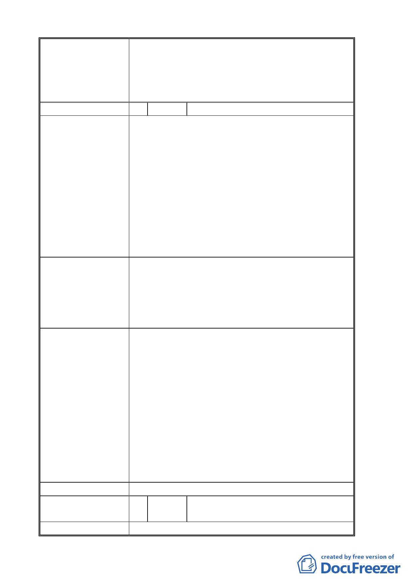

二、細部計畫部分依本次會議市府所送修正後計畫
書圖內容先予通過；惟其後續實質開發依涉及
之水土保持、交通影響、都市設計、環境影響
評估等各項審查結果辦理，以確保其彈性。
三、 餘依申請單位回應意見辦理。
編 號 2 陳情人 羅東源
陳 情 理 由 1. 本人強烈反對都市發展局 99 年 1 月 7 日所公展之變
更臺北市文山區指南山莊機關用地為大專用地（國立
政治大學）及保護區主要計畫案與細部計畫案將大片
機關用地劃設為保護區。
2. 本人土地位於本案將要被劃設為保護區的範圍內，這
些土地在民國 58 年劃定為機關用地之後為國防部指
南山莊使用一直沒有依規定徵收，後與相關單位協商
均無結果。現在要將這片機關用地變更為大專用地供
國立政治大學使用，更是應將全部機關用地一起變更
為大專用地，怎麼可以將學校認為用到地部分變更、
其他部分就變更成保護區，如此將土地被長期使用為
依規定徵收之民眾的權益置於何處？
建 議 辦 法 這些被劃設為保護區的區域緊鄰學校區域事實上很難單
獨做為其他用途使用，最好的方法即為由政治大學做整體
規劃才能達到最佳的處理，又可以將保障長期被劃設為機
關用地卻未被徵收的地主的權益。強烈反對將部分機關用
地變更為保護區，應該全數變更為大專用地由政治大學經
徵收後做整體的規劃利用以達到雙贏的目的。
申請單位回應意見 1.本案區內多為山坡地，為避免不當開發利用，考量坡地安
全維護及校地整體規劃運用，於公展草案中，將指南山莊
南邊 3 塊坡度超過 30％以上地區劃設為保護區，而基地中
央山坡地雖亦為坡度 30％以上地區，惟基地周圍皆為可開
發利用的土地圍繞，無法將其獨立分割，故政治大學將其
一併納入變更為大專用地。
2.第二次專案小組決議將指南山莊全部變更為大專用地，如
此，政治大學需付出徵地補償費初估為 17 億 5700 萬元，
加上撥付給國防部的地上物拆遷費 1 億元，共計約 18 億
5700 萬元，如此龐大的經費負擔非政治大學所能承受。惟
政治大學仍尊重專案小組決議，重新修正本變更案主要計
畫及細部計畫書圖文件，將指南山莊用地全部變更為大專
用地。
委員會決議 同編號 1。
編 號 3 陳情人 李洪來春、莊金釵、李伯齡、莊石林
等人聯署
陳 情 理 由 原建築已存在 50 年，建議依目前指南山莊之牆界開發；
-7-